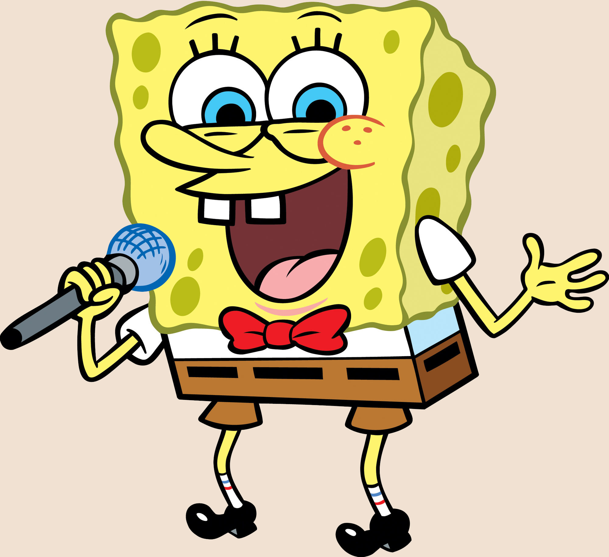

О сериале
«Губка Боб Квадратные Штаны», также известный как «Спанч Боб Сквэр Пэнтс» (англ. SpongeBob SquarePants), — американский мультипликационный сериал, который транслируется на телеканале «Nickelodeon». Появился в эфире 1 мая 1999 года и стал одной из самых популярных анимационных программ телевидения
Персонажи

SpongeBob
Главный персонаж сериала. Любит свою работу поваром в Красти Краб

Patrick
Лучший друг Губки Боба, морская звезда. Любит покушать.
Squdward
Сосед Губки Боба. Очень любит тишину и спокойствие.
Gary
Домашний питомец Губки Боба. Мяукает. Много ест.

Eugene H.Krabs
Работадатель Губки Боба. Хозяин кафе "Красти Краб".

Sandy Cheeks
Сосед Губки Боба. Очень любит тишину и спокойствие.
Смотреть все серии онлайн
Создатель мультфильма
Сти́вен Макдэ́ннелл Хи́лленберг (англ. Stephen McDannell Hillenburg) — американский аниматор, наиболее известный как создатель мультсериала «Губка Боб Квадратные Штаны». Разрабатывая концепцию шоу, Хилленберг вспоминал свой опыт преподавания в Институте океанологии и то, как дети были загипнотизированы приливными животными, включая крабов, осьминогов, морских звёзд и губок. Он решил, что мультсериал должен проходить под водой. Он хотел, чтобы его сериал выделялся из большинства популярных мультфильмов того времени. В итоге, Хилленберг решил сосредоточиться на одном герое — губке по имени Боб. Эрик Коулмэн, ныне бывший исполнительный директор Nickelodeon, описал обстановку «довольно удивительной». Nickelodeon одобрил проект и дал Хилленбергу деньги на производство пилотной серии «Требуется помощник».